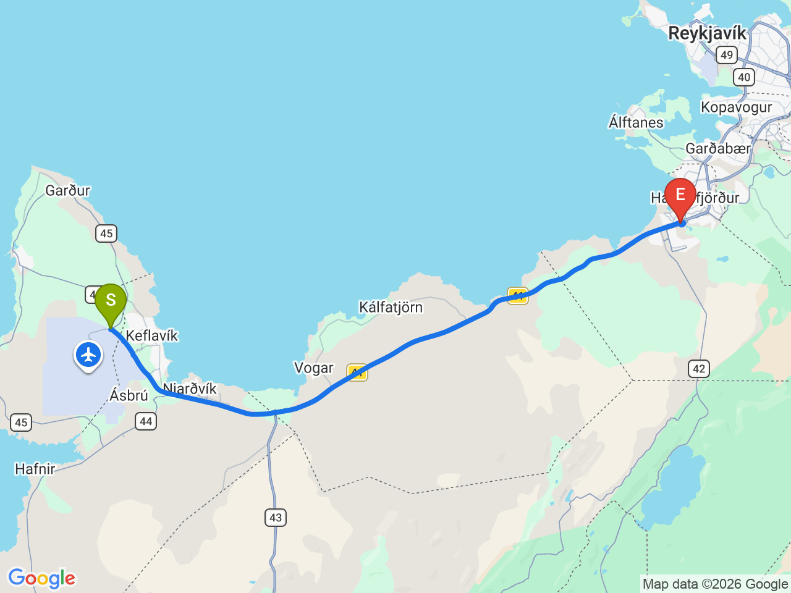

Day 06-2 · 2026-08-21（五）
冰島環島 Day 1/11
抵達冰島・雷克雅維克市區漫遊
KEF 入境取車，進入雷克雅維克市區，輕鬆步行遊覽舊城與海濱地標
⏰時差提醒：冰島全年使用 UTC+0（不實施夏令時間），阿姆斯特丹8月為 UTC+2。抵達雷克雅維克後當地時間比阿姆斯特丹慢2小時，記得把手錶/手機調整回冰島時間

行程明細DAY 06-2
| 時間 | 地點 | 預計停留 | 價格 | 備註 |
|---|---|---|---|---|
| 18:20 | Keflavík 國際機場入境・取車 | 60 | 依實際航班時間；建議事先完成租車線上手續，租車費用另計 | |
| 前往雷克雅維克市區・Hotel Vellir Check-in | 車程約50分鐘 |
每日三餐
晚餐
未安排
舊港區周邊晚餐，餐廳尚未確認
住宿資訊
本日預估開車里程
50km
KEF 機場 → 雷克雅維克市區；市區內景點以步行串聯
該區域加油站
- N1 Hringbraut市中心・24小時
- N1 Ártúnshöfði24小時・含簡餐